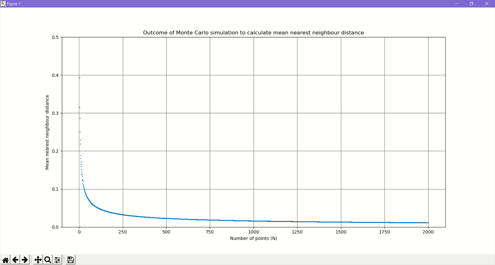
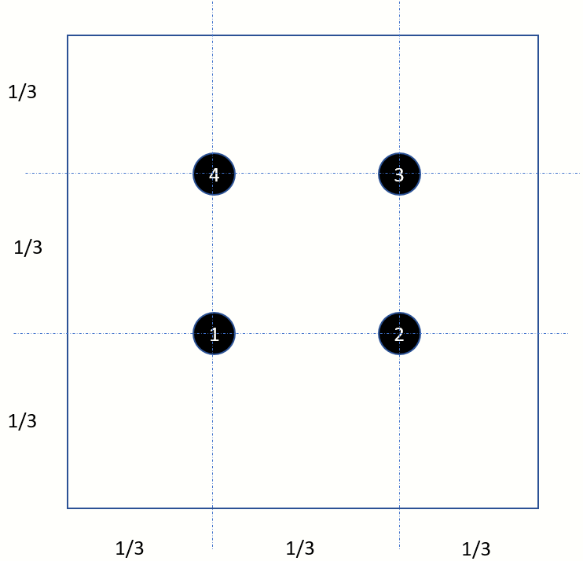
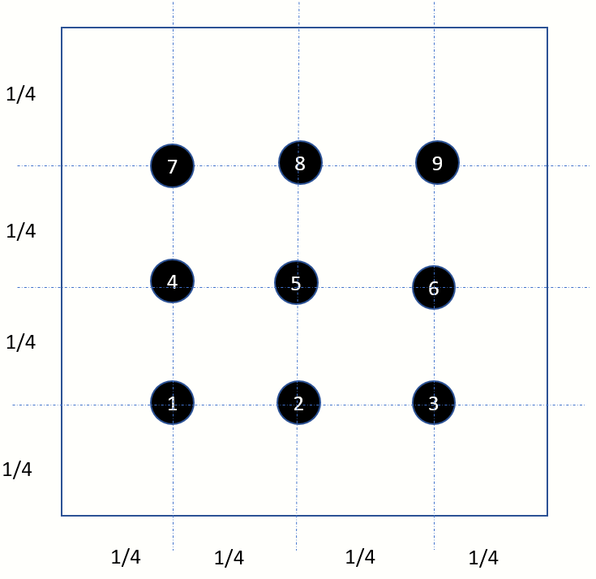
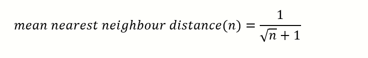

Surprising behaviour of the average nearest neighbour distance in a cluster of points
Introduction
I was staring at images which were dotted with various densities of salt and pepper noise. Some natural questions popped up in my mind - what happens to the distance between the points when they
get more and more crowded? If we were to define a metric to measure the proximity between points, say average nearest neighbour distance ,
then how does this metric behave with increasing density of points?

Image with salt pepper ratio=0.6
Image with salt pepper ratio=0.90
Image with salt pepper ratio=0.99
The salt and pepper ratio is defined as the probability of a randomly selected pixel being white (salt) in colour. Higher the value, lesser is the number of black pixels
and hence the points appear to be further apart. Salt and pepper noise can be applied only any image, i.e. color or gray scale.
We will restrict our examples to monochrome images only. A pixel can be white or black only.
Understanding Nearest Neighbour Distance
Consider the points displayed in this image. By definition, every point has 1 one point which is closest.
You could have multiple points which are equidistant and hence multiple nearest neighbours. But for this discussion we will pick the closest neighbour.

- Point 2 is the nearest neighbour of point 1
- Point 2 is the nearest neighbour of point 4 and vice-versa
- Point 4 is the nearest neighbour of point 3
- Point 4 is the nearest neighbour of point 5
Begin with just 2 points in an unit square
This is a classical problem. What is the expected distance between 2 randomly selected points in a square with side 1 unit?
The mathematical solution to this problem is not trivial and I will leave the details out this discussion.
A wonderful treatise on this subject can be found here.
From the same article, I present the equation below, which is the solution to our problem. The expected distance turns out to be 0.5214.
Monte Carlo approach to compute expected distance between 2 random points
import datetime
import math
import numpy as np
import random
import statistics
#
#Pick 2 randmom points, compute the distance and repeat several times.
#Compute average of all distances
#
def compute_expected_distance_between_2points_n_trials(max_trials:int):
seed=datetime.datetime.now().second
random.seed(seed)
distances=[]
for i in range(0,max_trials):
x1=random.random()
y1=random.random()
x2=random.random()
y2=random.random()
distance=math.sqrt( (x1-x2)**2 + (y1-y2)**2 )
distances.append(distance)
return statistics.mean(distances)
iterations=100000
average=compute_expected_distance_between_2points_n_trials(10000)
print("Average=%f after iterations=%d" % (average,iterations))
In this simple Python program we generate pairs of random points and calculate the distance using Pythagoras theorem.
Running the above with 100000 iterations gave me a value of 0.522079 which is quite close to the theoretical value of 0.5214
What happens if we increase the number of points?
We will not try and create a theoretical model.
Instead we will write a simple Python program to do a Monte Carlo simulation with various densities of points.

#
#We will select N randmon points in an unit square and then compute the mean nearest-neighbour distance
#We will then plot the mean NN distance vs N
#
#
from typing import List
import numpy as np
import os
import random
from numpy.core.fromnumeric import mean
from skimage import io
from sklearn.neighbors import KDTree
import math
import statistics
import matplotlib.pyplot as plt
class NearestNeighbourDistance(object):
"""docstring for NearestNeighbourDistance."""
def __init__(self, squaresize:float,point_count:int, iterations:int):
super(NearestNeighbourDistance, self).__init__()
self.__squaresize=squaresize
self.__point_count=point_count
self.__iterations=iterations
def compute_mean(self):
means_across_iterations=[]
for iteration in range(0,self.__iterations):
random_array=np.random.random((self.__point_count,2))
tree = KDTree(random_array)
nearest_dist, nearest_ind = tree.query(random_array, k=2) # k=2 nearest neighbors where k1 = identity
mean_distances_current_iterations=list(nearest_dist[0:,1:].flatten())
mean=statistics.mean(mean_distances_current_iterations)
means_across_iterations.append(mean)
return statistics.mean(means_across_iterations)
def plot(points_count:List, means:List):
plt.scatter(points_count,means, marker='.', s=5)
plt.grid(b=True, which='major', color='#666666', linestyle='-')
plt.show()
pass
lst_pointcount=[]
lst_meandistance=[]
iterations=50
for point_count in range(2,1000):
nn=NearestNeighbourDistance(squaresize=1,point_count=point_count,iterations=iterations)
mean_distance=nn.compute_mean()
lst_pointcount.append(point_count)
lst_meandistance.append(mean_distance)
print("Computed mean NN distance of %f for %d points" % (mean_distance,point_count))
plot(lst_pointcount, lst_meandistance)
Why does the average neighbour distance exhibit such a distribution?
We can see that at N=2, the average is 0.5214. With increasing N, the average distance falls very rapidly and then flattens out.
Can we work out a simple mathematical model that would explain such a behaviour?
Finding a simple mathematical model
We will make some approximations. Consider a square with N=4 points and N=9 points.

N=4, average nearest neighbour distance=1/3

N=9, average nearest neighbour distance=1/4
Extrapolating from the above, we can see the following pattern emerging. Obviously, this will not work for n=2 because we have a rigorous formula which we discussed earlier.

Plotting the simple mathematical model with N
We can clearly see that this curve exhibits the same characteristics that we obtained from our Monte Carlo simulation, i.e. a steep fall and then flattening out.

from typing import List
import numpy as np
import math
import matplotlib.pyplot as plt
def plot(points_count:List, means:List):
plt.ylim([0, 0.5])
plt.scatter(points_count,means, marker='.', s=5)
plt.grid(b=True, which='major', color='#666666', linestyle='-')
plt.show()
pass
lst_pointcount=[]
lst_meandistance=[]
for point_count in range(2,2000):
mean_distance=1/(math.sqrt(point_count)+1)
lst_pointcount.append(point_count)
lst_meandistance.append(mean_distance)
print("Computed mean NN distance of %f for %d points" % (mean_distance,point_count))
plot(lst_pointcount, lst_meandistance)
Lessons learnt
What did we begin with?
Show a derivative